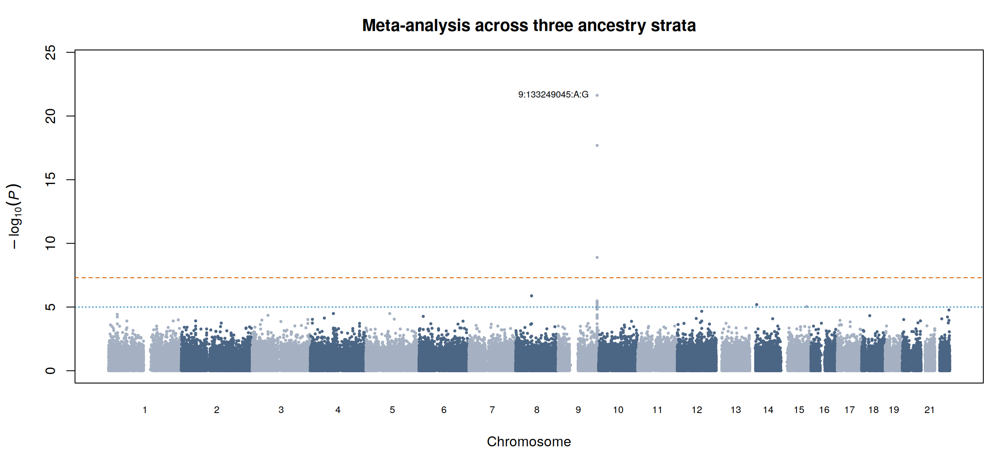
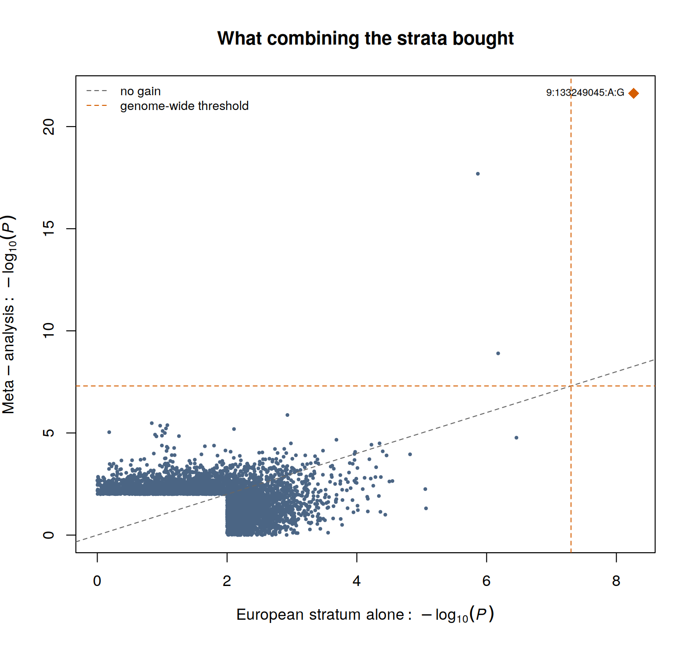
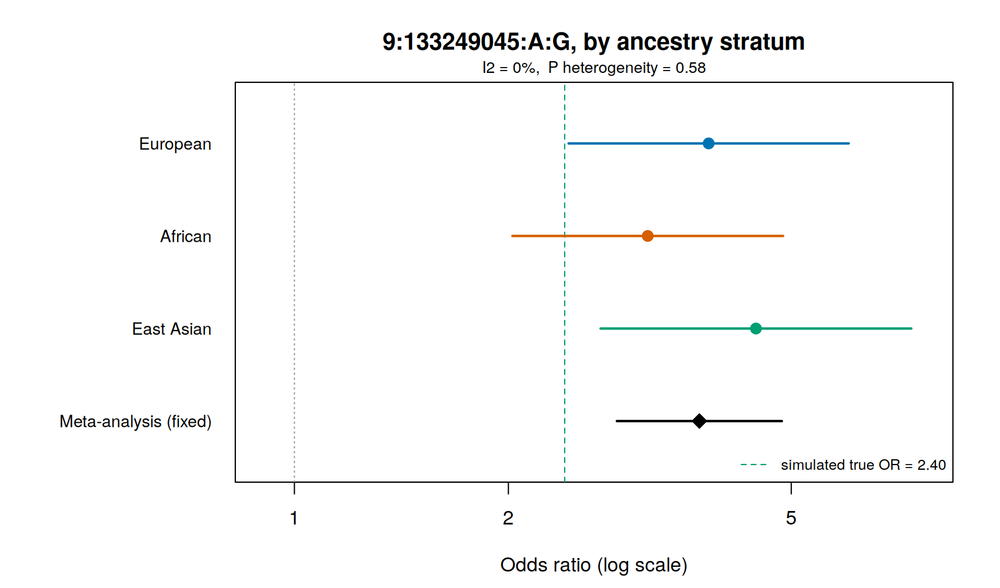
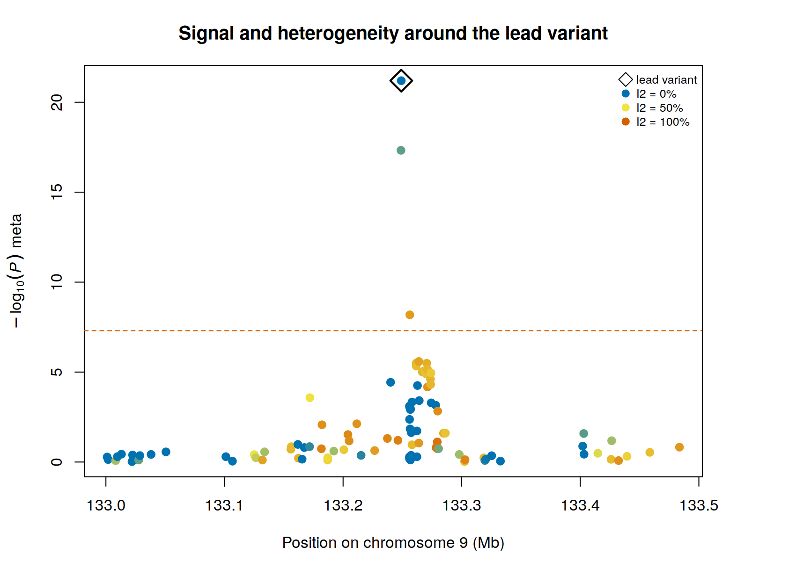

Meta-analysis
A single cohort of a few hundred cases cannot find a variant with an odds ratio of 1.2. That is not a failure of analysis, it is arithmetic, and Section 4A showed it: one signal, and only because the demonstration data were built with an implausibly strong one.
Meta-analysis is how the field gets round this. Studies that are individually underpowered combine their summary statistics, and the combined evidence reaches a threshold that none of them could reach alone. For rare cancers it is not an optional extra at the end of the pipeline; it is the reason a single-cohort analysis is worth doing at all.
This page demonstrates it on the three ancestry groups of the demonstration dataset, analysed separately and then combined.
~/gwas_tutorial/
├── demo_data/
├── scripts/05_meta_analysis/
└── results/meta/The three strata here are ancestry groups within one genotype file, not independently recruited and independently genotyped cohorts. They share a variant set, an allele coding, a genome build and a single simulated phenotype model, and no individual appears twice.
That makes the demonstration clean, and in one respect misleadingly so: the harmonisation problems that consume most of the effort in a real meta-analysis cannot arise here. Step 02 runs all of the checks in full anyway, precisely because a script that assumes agreement will never find the disagreement. Where a check passes trivially, the page says so.
What the demonstration does show honestly is the statistical machinery: inverse-variance weighting, heterogeneity, fixed versus random effects, and the size of the gain.
Finish Association testing. You need results/qc/pdac_demo_08_filt and the demonstration phenotype and covariate files.
01 - Analysing each stratum separately
Why not simply pool everyone into one regression? Because that assumes each variant has the same effect in every group, and that principal components can absorb the frequency differences between them. Neither is safe. Causal-allele frequencies and linkage disequilibrium differ between populations, so a marker can tag a causal variant well in one group and poorly in another. Stratifying makes no such assumption, and it makes the differences visible and testable instead of hiding them inside one pooled estimate.
bash scripts/05_meta_analysis/01_stratified_gwas.shEach stratum gets its own LD pruning, its own principal components and its own association test.
| Stratum | Individuals | Cases | Controls | Effective N |
|---|---|---|---|---|
| European | 625 | 229 | 396 | 580.4 |
| African | 295 | 142 | 153 | 294.6 |
| East Asian | 319 | 141 | 178 | 314.7 |
| Combined | 1,239 | 512 | 727 | 1,189.7 |
Notice the African stratum. It has fewer than half the individuals of the European one, but because its case-control ratio is nearly balanced it contributes an effective sample size of 295 against 580: proportionally far more per participant. Effective sample size, not headline count, is what a meta-analysis is really combining.
Section 4A used ten principal components in the European stratum. Here every stratum uses five, because estimating ten components in fewer than 320 individuals spends parameters the data cannot support, and because the strata must be treated identically for their results to be comparable.
This gives a free stability check, one of the three the guide recommends. In the European stratum, the lead variant’s P value is 5.31 × 10⁻⁹ with ten components and 5.41 × 10⁻⁹ with five. The choice does not matter here, and now we know that rather than assuming it.
02 - Harmonisation, where the errors actually are
Why. This step does no statistics. It exists because the commonest failures in meta-analysis are bookkeeping failures, and they are silent: the numbers still combine, the plot still looks plausible, and the effect points the wrong way.
Rscript scripts/05_meta_analysis/02_harmonise.RComparing the effect allele across strata, the script had to flip the sign of the effect estimate for 32,829 variants in the African stratum and 30,878 in the East Asian one. Roughly one variant in nine.
These strata came from the same genotype file. The cause is that PLINK 2 reports the effect allele as the minor allele in the sample being analysed, and which allele is minor changes between populations. At 1:817341:A:G, G has frequency 0.16 in the European stratum and is the minor allele; in the African stratum G reaches 0.70, so A becomes minor and the reported effect refers to the other allele.
Combining those numbers without aligning them would have cancelled real signal and manufactured false signal, and nothing in the output would have looked wrong. If this can happen within a single file, it will certainly happen across cohorts genotyped in different laboratories a decade apart. Always align on an explicitly named effect allele, never on column position or on the assumption that two files agree.
The other three checks the script performs:
Strand ambiguity. At A/T and C/G variants the effect allele cannot be resolved by comparing alleles, because A complements T and C complements G. Here 1,833 variants (0.6%) are ambiguous, 339 of them with frequency between 0.4 and 0.6, where frequency cannot resolve them either. They are flagged. Many consortia simply exclude ambiguous variants in that frequency band.
Effect-size scale. A log odds ratio, an odds ratio and a linear-model beta cannot be averaged together. Confirm what each contributing study reported, in writing, before combining anything.
Sample overlap. If the same individuals appear in two contributing studies the estimates are correlated, the fixed-effect standard error is too small, and significance is inflated. This cannot be detected from summary statistics; it has to come from the study descriptions.
The European analysis tested 392,331 variants. Only 296,678 are present in all three strata, because a variant that is monomorphic in one population cannot be tested there. A real meta-analysis usually keeps such variants, combining each across whatever studies carry it and reporting the study count per variant. This demonstration takes the simpler route of using the intersection, which is why the meta-analysis has fewer variants than the single-stratum scan.
03 - Combining the strata
Rscript scripts/05_meta_analysis/03_meta_analysis.RFixed effects. Each stratum is weighted by its precision, w = 1/SE²:
\[\beta_{\text{meta}} = \frac{\sum w_i \beta_i}{\sum w_i}, \qquad \text{SE}_{\text{meta}} = \sqrt{\frac{1}{\sum w_i}}\]
This is inverse-variance weighting, what METAL and GWAMA do. The arithmetic is written out in the script so that the reader can see it rather than trust it.
Heterogeneity. Cochran’s Q asks whether the strata differ by more than sampling error would produce; I² expresses the same information as a percentage of total variation.
Random effects. Allows the true effect to differ between strata, estimating the between-study variance by DerSimonian-Laird and widening the interval. Reported alongside the fixed-effect result, not instead of it, because the comparison is what tells you whether the model choice changes the conclusion.
The result
| European alone | Meta-analysis | |
|---|---|---|
| Lead variant P | 5.4 × 10⁻⁹ | 2.4 × 10⁻²² |
| Genome-wide significant | 1 | 3 |
| Suggestive (P < 1 × 10⁻⁵) | 8 | 11 |
| λ | 1.022 | 1.003 |
Thirteen orders of magnitude at the causal variant, from roughly doubling the effective sample size. That is the whole argument of this guide in one line: the single-cohort analysis was sound but nearly uninformative, and it became informative by being combined.


Each point is a variant, its European P value against its meta-analysis P value. Most sit near the diagonal; the causal variant is far above it. Points below the diagonal are variants where the additional strata argued against the European result, which is equally informative.
04 - Reading the disagreement
Rscript scripts/05_meta_analysis/04_meta_plots.R
The lead variant, stratum by stratum. The odds ratios are 3.78 in Europeans, 3.07 in Africans and 4.76 in East Asians, with a combined estimate of 3.74 and confidence intervals that overlap heavily. I² = 0%, heterogeneity P = 0.44: the strata agree, and the fixed-effect model is appropriate.
The dashed green line marks the true simulated odds ratio, 2.40. Every stratum overestimates it, and so does the meta-analysis. This is the winner’s curse from Section 4A, and meta-analysis does not cure it: combining biased discovery estimates gives a more precise biased estimate. The remedy is replication in data not used for discovery, not more of the same data.

Look at the pattern rather than the peak. The causal variant, the open diamond, has I² = 0: it behaves identically in all three populations, because it is the cause and its effect does not depend on ancestry.
Its correlated neighbours do not. At 9:133256264 I² reaches 79% and the heterogeneity P value is 0.009. Under fixed effects that variant looks genome-wide significant at 1.3 × 10⁻⁹; under random effects its P value collapses to 0.0035.
Nothing is wrong with the data. Those variants are not causal, they merely tag the causal variant through linkage disequilibrium, and LD structure differs between populations, so how well they tag it differs too. Strong heterogeneity at a proxy with none at the lead is a signature of a shared causal variant seen through different LD, and it is a reason to fine-map per ancestry rather than pooled (Section 6).
Across all 296,678 variants, 4.4% have a heterogeneity P below 0.05, against the 5% expected by chance alone. Genome-wide there is no excess: the heterogeneity is concentrated exactly where the signal is.
Key decisions on this page
- Stratify and combine, or pool with covariates. Stratify whenever each group can support its own analysis, and always when the groups are different ancestries.
- Fixed or random effects. Report both. Where they disagree, the disagreement is the finding.
- Which variants to carry: the intersection across studies, or every variant with the number of contributing studies recorded. The second is better practice and needs a per-variant study count in the output.
- How to treat strand-ambiguous variants: flag, or exclude in the ambiguous frequency band.
- Whether contributing studies share individuals. Establish this from the study descriptions before running anything; it cannot be recovered afterwards.
The pitfalls checklist
- Effect allele. Align explicitly, by allele name. This demonstration needed 63,707 sign flips within a single genotype file.
- Strand. A/T and C/G variants near 50% frequency cannot be resolved. Flag or drop them.
- Scale. Log odds ratio, odds ratio and linear beta are not interchangeable.
- Overlap. Shared individuals inflate significance and are invisible in summary statistics.
- Build. Confirm every study is on the same genome build before matching by position.
- Weights. Weight by precision, not by participant count.
- Heterogeneity. Report it per variant. Do not average away a difference that is telling you something.
Fine mapping, the next step, takes the credible set at this locus and asks which of the correlated variants is the causal one. The heterogeneity pattern above is already the first piece of evidence: the variant with no heterogeneity is the one behaving like a cause.